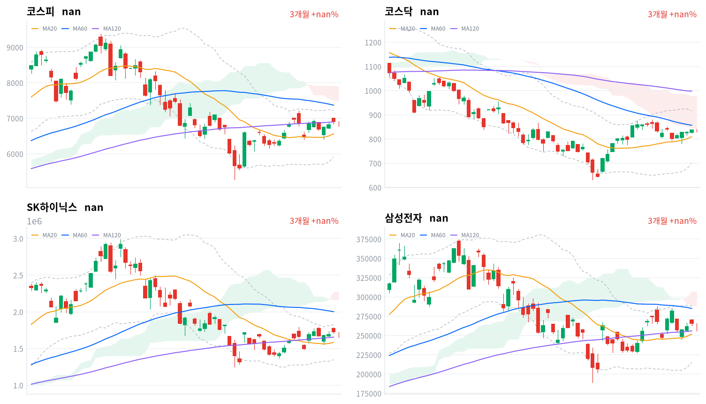
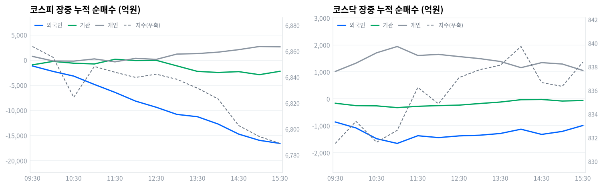

코스피는 미국의 반도체 관세 확대 검토 소식과 잭슨홀 경계심리가 겹치며 1.79% 내린 6,788.88로 마감했다. 삼성전자와 SK하이닉스 등 대형 반도체주가 나란히 떨어지며 지수 하락을 이끌었다.
코스닥은 반도체 낙폭에서 비켜서며 0.09% 오른 838.41로 마감했다. 코스피에서는 외국인과 기관이 나란히 순매도했지만(당일 잠정) 개인이 홀로 사들이며 낙폭을 방어했다.
코스피는 오늘 1.79% 내린 6,789로 마감해 사흘 연속 상승 흐름을 끊었다. 외국인이 8,525억원, 기관이 1조1,876억원을 순매도했고(당일 잠정) 개인만 4,194억원을 순매수하며 지수를 방어했다.
이 매도는 여러 재료가 겹친 결과인데, 미국이 반도체 관세 적용 대상을 노트북·서버 같은 완제품까지 넓히는 방안을 검토 중이라는 보도가 나와 두 대형 반도체주의 미국向 매출 마진 훼손 우려를 키웠다. 여기에 전날 한국은행의 깜짝 기준금리 인상 여진과 잭슨홀에서 예정된 신임 연준의장 첫 연설을 앞둔 관망 심리까지 함께 얹혔다. 코스닥이 0.09% 오르며 코스피와 갈린 것은 이 매도가 반도체 대형주에 집중됐다는 뜻이다.
위험 노출은 다음 세션까지 축소한다. 코스피가 일목 전환선(6,809) 아래로 마감해 기술적 우위가 무너진 가운데, 장중 수급을 보면 기관 순매도가 정규장 마지막 관측 2,228억원에서 마감 집계까지 크게 불어나 마감 무렵 매도가 더 거세졌다. 반대로 외국인은 같은 구간에서 매도 강도가 오히려 줄어, 마감 동시호가에서 두 매도 주체가 다른 방향으로 움직였다.
이 판단이 틀렸다고 볼 조건은 명확하다. 코스피가 일목 전환선(6,809)을 다시 넘어서면 오늘 하락을 하루짜리 조정으로 보고 축소 판단을 되돌린다. 잭슨홀 연설이 비둘기파적으로 나와 밤사이 미국 반도체주가 반등한다면 이 매도가 과잉반응이었다고 볼 여지도 있다.
전날 미국 증시는 나스닥이 1.57%, S&P500이 0.72%, 다우존스도 0.2% 오르며 3대 지수가 나란히 강세로 마감했다. 같은 날 아시아 주요 지수는 엇갈렸다 — 상해종합이 1.13% 오르고 대만가권도 0.31% 올랐지만 닛케이는 -0.20%, 항셍은 -0.34%로 내렸다. 아시아 평균은 0.22% 오르는 데 그쳤고 코스피는 이 평균보다 2.02%포인트 낮은 성적을 내며 하락한 세 지수 가운데서도 낙폭이 가장 컸다.
코스피는 전일 종가 6,912보다 낮은 6,847에서 갭다운 출발해, 간밤 미국 증시의 강세를 그대로 이어받지 못했다. 한국 정규장이 열린 시간대 미국 선물은 E-mini S&P500이 0.1%, 나스닥 선물이 -0.03%로 개장부터 마감까지 14개 관측 구간 내내 거의 보합권에 머물렀다. 미국 선물이 방향을 주지 못했다는 것은 오늘 코스피 하락이 외부 요인이 아니라 한국 안에서 새로 불거진 반도체 관세 재료에 홀로 반응한 결과라는 뜻이다.
코스피는 오전 09:30 6,864까지 잠깐 올랐다가 내림세로 돌아섰고, 낮 12시 6,840선을 거친 뒤로는 오후 내내 반등다운 반등 없이 그대로 밀린 채 마감했다. 코스닥은 같은 시각 831까지 밀렸지만 오후 들어 꾸준히 올라 839.72까지 오름폭을 키운 뒤 838.41로 마감해 코스피와 다른 길을 걸었다. 원/달러 환율은 오전 1,381원대에서 마감 무렵 1,372원대까지 내려, 코스피 약세와는 반대로 원화가 강해졌다.
폴리티코는 미국 정부가 노트북·서버 같은 반도체 탑재 완제품까지 관세 대상을 넓히는 방안을 검토 중이라고 전날 보도했다. 미국向 매출 비중이 큰 삼성전자·SK하이닉스에 외국인 매도가 몰린 배경이다.
여기에 전날 한국은행의 기준금리 깜짝 인상 여진과 잭슨홀에서 예정된 신임 연준의장 첫 연설을 앞둔 관망 심리가 겹쳤다. 이 연설은 한국 정규장 마감 이후(한국시간 밤~다음 날 새벽) 예정돼 오늘 장에는 결과가 반영되지 않았다. 두 재료가 겹치며 투자자들은 확실한 방향을 잡기보다 관망 쪽으로 기운 채 장을 마쳤다.
코스피는 오늘 6,789로 마감해 최근 20거래일 고점(7,217)보다 6% 낮은 자리다. 20거래일 저점(5,630)과 비교하면 여전히 20% 이상 높아, 이번 하락에도 상승 추세 자체가 꺾인 것은 아니다. 장중 고가(6,902)와 저가(6,780)의 차이는 122포인트로 등락폭이 제법 컸던 하루였다.
| 지수 | 종가 | 등락률 | 시가 | 고가 | 저가 | 전일 종가 |
|---|---|---|---|---|---|---|
| 코스피 | 6,788.88 | -1.79% | 6,846.54 | 6,901.78 | 6,780.13 | 6,912.37 |
| 코스닥 | 838.41 | +0.09% | 835.23 | 840.85 | 829.59 | 837.65 |
6,847에서 출발한 코스피는 09:30 6,864까지 오른 뒤 내림세로 돌아섰다. 10시30분 6,824까지 한 차례 급하게 밀렸다가 11시 6,848선으로 되돌리는 등 오전 내내 등락을 거듭했다. 낮 12시 6,840선까지 다시 밀린 뒤로는 오후 들어서도 반등하지 못하고 미끄러지듯 흘러내려 장 마감까지 낙폭을 지켰다.
코스닥은 09:30 831까지 밀렸다가 낮 이후 꾸준히 올라 오후 2시 839.72까지 오름폭을 키웠다. 이후 14시30분 836.67로 한 차례 조정받았다가 838.41로 마감해, 코스피가 오후 내내 낙폭을 지킨 것과 달리 코스닥은 저점을 다지고 되오르는 흐름을 보였다.
오늘 하락은 미국의 반도체 관세 확대 검토 보도가 방아쇠가 됐다. 삼성전자와 SK하이닉스 등 대형 반도체주가 나란히 떨어지며 지수 전체를 끌어내렸고, 시가총액 비중이 큰 두 종목의 낙폭이 지수 전체 하락폭 1.79%포인트 가운데 상당 부분을 설명한다. 반도체 비중이 상대적으로 낮은 코스닥이 같은 재료에 덜 흔들리며 오히려 오른 것도 이 하락이 업종 특정적이었다는 뜻이다.

코스피·코스닥·SK하이닉스·삼성전자 3개월 일봉에 이동평균(20·60·120)·볼린저밴드·일목균형표 구름대를 오버레이했다. 상승 캔들은 녹색, 하락 캔들은 적색으로 표시된다.
코스피(6,789)는 일목 전환선(6,809)을 다시 밑돌며 마감했다. 전환선을 되찾으면 20일 고점(7,217)까지 열리고, 이 자리마저 밀리면 기준선(6,240)이 다음 지지선이다.
코스닥(838)은 일목 구름 하단(842)을 바로 위 저항으로 두고 전환선(827)을 지지 삼아 마감했다. 구름 하단을 넘으면 20일 고점(879)까지 열리고, 전환선이 무너지면 기준선(755)까지 밀릴 수 있다.
SK하이닉스(165만원)는 전환선(164만원) 바로 위에서 마감해 그 선을 지지로 지키면 20일 고점(179만원)까지 반등 여지가 있다. 전환선이 무너지면 기준선(160만원)까지 밀릴 수 있다.
삼성전자(25.7만원)는 전환선(26.7만원)을 바로 위 저항으로 두고 기준선(23.9만원)을 지지 삼아 마감했다. 전환선을 넘어서면 반등 폭을 키울 수 있고, 기준선이 무너지면 낙폭이 더 커질 수 있다.
위 레벨은 일목균형표와 스윙 고저를 기계적으로 계산한 값이며 투자 권유가 아니다.
| 주체 | 순매수(억원) |
|---|---|
| 개인 | +4,194 |
| 외국인 | -8,525 |
| 기관 | -11,876 |
| 주체 | 순매수(억원) |
|---|---|
| 개인 | +979 |
| 외국인 | -942 |
| 기관 | -30 |
코스피에서는 외국인이 8,525억원, 기관이 1조1,876억원을 나란히 순매도했고(당일 잠정) 개인만 4,194억원을 순매수했다. 매도 주체 둘의 방향이 같다는 점에서 오늘 하락은 개인 혼자만의 판단이 아니라 실제 자금 이탈이 만든 결과로 볼 수 있다.
코스닥에서는 외국인이 942억원, 기관이 30억원을 각각 순매도했지만(당일 잠정) 개인이 979억원을 순매수하며 균형을 맞췄다. 매도 규모가 크지 않아 지수는 0.09% 오르며 사실상 보합에 머물렀다.

누적 순매수(억원), 정규장 09:30~15:30 30분 앵커 기준. 지수는 우측 축.
| 시각 | 코스피(억원) | 코스닥(억원) | ||||
|---|---|---|---|---|---|---|
| 개인 | 외국인 | 기관 | 개인 | 외국인 | 기관 | |
| 09:30 | +735 | -1,174 | -947 | +1,019 | -859 | -163 |
| 10:00 | -178 | -2,255 | -263 | +1,326 | -1,079 | -251 |
| 10:30 | -211 | -3,184 | -622 | +1,711 | -1,479 | -260 |
| 11:00 | +233 | -4,844 | -771 | +1,945 | -1,655 | -325 |
| 11:30 | -350 | -6,420 | +163 | +1,611 | -1,369 | -276 |
| 12:00 | +346 | -8,160 | -83 | +1,652 | -1,439 | -250 |
| 12:30 | +139 | -9,379 | -49 | +1,571 | -1,375 | -232 |
| 13:00 | +1,193 | -10,801 | -1,151 | +1,495 | -1,350 | -173 |
| 13:30 | +1,292 | -11,264 | -2,253 | +1,389 | -1,286 | -118 |
| 14:00 | +1,578 | -12,716 | -2,462 | +1,159 | -1,127 | -31 |
| 14:30 | +2,074 | -14,722 | -2,298 | +1,346 | -1,320 | -22 |
| 15:00 | +2,699 | -15,960 | -2,903 | +1,295 | -1,209 | -80 |
| 15:30 | +2,640 | -16,573 | -2,228 | +1,055 | -989 | -61 |
코스피 외국인 누적 순매수는 종일 마이너스 한 방향으로만 흘러 뚜렷한 전환이 없었다. 장 시작 직후 246억원 순매수를 기록한 것을 빼면 이후 줄곧 매도 폭이 커져 마감 무렵에는 1조6,573억원까지 불어났다. 같은 시간 코스피는 09:30 6,864까지 잠깐 오른 뒤 줄곧 밀려 마감해, 외국인 매도가 깊어지는 흐름과 대체로 방향이 겹쳤다.
기관 안에서는 금융투자(프로그램·선물 연계 매매)가 오전 내내 소폭 매도와 매수를 오갔고, 연기금등(정책성 장기 자금)은 큰 움직임 없이 소극적이었다. 정규장 마지막 관측에서 금융투자는 순매수로 돌아섰지만 기관 전체는 그 뒤로 매도 폭을 훨씬 더 키우며 마감했다. 같은 날 코스피 비차익 프로그램도 큰 폭 순매도를 기록해, 마감 무렵 프로그램과 기관 매도가 함께 몰렸다고 볼 수 있다.
정규장 마지막 관측에서 마감 집계(당일 잠정)로 넘어가며 두 매도 주체는 서로 다른 길을 갔다. 외국인은 매도 강도가 오히려 줄었지만, 기관은 2,228억원에서 1조1,876억원까지 매도가 더 깊어졌다.
코스닥은 이런 큰 되돌림 없이 마감 동시호가 영향이 제한적이었다. 다음 거래일에는 기관의 이 막판 매도가 하루짜리 마감 수급인지 새로운 매도 기조의 시작인지 확인해야 한다.
| 시장 | 차익 순매수(억원) | 비차익 순매수(억원) | 전체 순매수(억원) |
|---|---|---|---|
| 코스피 | +449 | -15,398 | -14,949 |
| 코스닥 | -6 | -929 | -935 |
코스피 프로그램 매매는 방향성 바스켓인 비차익이 순매도를 주도하며 전체 프로그램을 마이너스로 이끌었다(당일 잠정). 규모와 방향 모두 기관 순매도(당일 잠정)와 비슷해, 오늘 하락에는 방향성 바스켓 매도가 상당한 역할을 했다고 볼 수 있다. 선물 연계 기계적 매매인 차익은 449억원 순매수에 그쳐 하락 방향에 미친 영향은 제한적이다.
코스닥은 비차익이 929억원 순매도로 전체 프로그램 순매도를 사실상 이끌었다(당일 잠정). 이는 외국인 순매도(942억원, 당일 잠정)와 방향·규모가 거의 일치한다. 다만 프로그램 매매는 시장 전체 집계라 어느 주체의 매도인지는 이 표만으로 가릴 수 없다.
| 순위 | 종목/ETF | 구분 | 거래대금 | 비고 |
|---|---|---|---|---|
| 1 | SK하이닉스 | 개별주 | 4.72조원 | - |
| 2 | 삼성전자 | 개별주 | 3.82조원 | - |
| 3 | 반도체 테마 ETF | 테마·롱 | 1.00조원 | 8종 합산 |
| 4 | 금호건설 | 개별주 | 0.59조원 | - |
| 5 | 삼성전자우 | 개별주 | 0.55조원 | - |
| 6 | 두산에너빌리티 | 개별주 | 0.30조원 | - |
| 7 | SK하이닉스 레버리지 | 레버리지·롱 | 0.30조원 | 2종 합산 |
| 8 | 금호전기 | 개별주 | 0.25조원 | - |
| 9 | 전력·에너지 테마 ETF | 테마·롱 | 0.23조원 | 2종 합산 |
| 10 | 삼화콘덴서 | 개별주 | 0.18조원 | - |
단위 백만원 원본을 조 단위로 환산. 같은 기초자산 ETF는 방향별로, 같은 테마 섹터 ETF는 테마별로 묶었으며 코스피200·코스닥150 추종 지수 ETF 및 그 레버리지·인버스, 해외 ETF는 제외했다.
SK하이닉스·삼성전자·삼성전자우를 더한 개별 반도체 거래대금은 반도체 테마 ETF 바스켓의 아홉 배에 달해, 오늘 매도가 패시브 자금보다 개별 대형주에 훨씬 더 쏠렸음을 보여준다.
위 섹터 스니펫(네이버 대분류, 1일 기준)에서는 반도체가 -2.32%로 가장 크게 내렸고 조선·로봇·방산·건설도 나란히 밀렸다. 소프트웨어(+1.77%)·은행(+1.33%)은 반대로 올라, 오늘 하락은 반도체를 비롯한 일부 업종에 쏠려 있었다.
세부 업종 분류로 보면 오늘 상승률 상위는 인터넷과카탈로그소매(+7.4%)·기타금융(+7.18%)·화장품(+6.33%)이었다. 이 가운데 화장품은 65종목 중 47종목이 올라 상승 폭이 넓은 주도로 분류됐다.
이 세부 목록에는 오늘 지수를 끌어내린 반도체 업종이 포함되지 않아, 지수 하락과 세부 업종 상승이 함께 나타난 하루였다. 반도체 대형주가 지수 비중을 앞세워 끌어내리는 동안 중소형 업종 다수는 폭넓게 올랐다는 뜻이다.
삼성전자(-3.4%, 25만7천원 마감)와 SK하이닉스(-4.5%, 165만3천원 마감)는 나란히 급락하며 거래대금 1·2위를 지켰다고 한국경제 등이 보도했다. 미국의 반도체 관세 확대 검토와 전날 한국은행의 기준금리 인상 여진이 두 종목에 대한 외국인 매도로 이어졌다.
반도체 테마 ETF(8종 합산 1.00조원)에는 코덱스·타이거 계열 레버리지 상품도 섞여 있어, 개별주 매도와 별개로 저가 매수를 노린 패시브 자금도 일부 들어온 것으로 보인다. 다만 규모 자체는 개별 대형주 거래대금에 크게 못 미쳐 오늘 장의 중심은 여전히 개별주였다.
금호건설(0.59조원)은 거래대금 4위에 올랐지만 뚜렷한 개별 공시 재료는 확인되지 않는다. 8월 들어 여러 차례 급등락을 반복해 온 종목이라 수급·거래량이 주도한 단타성 장세로 보는 편이 합리적이다.
금호전기(0.25조원)도 대량 거래를 동반했지만 오늘 자로 확인되는 구체적 재료는 없다. 두산에너빌리티(0.30조원)는 원전·전력인프라 밸류체인 관심 속에 거래대금 상위에 이름을 올렸지만 마찬가지로 새로운 공시는 확인되지 않는다.
원/달러 환율은 오늘 오전 9시 1,381원대에서 마감 무렵 1,372원대까지 내려, 코스피 약세에도 원화가 강해진 하루였다. 국고채 10년물은 4.284%로 전일보다 4.6bp 올라 최근 이어진 상승 흐름을 지켰다.
| 지표 | 금리 | 전일比(bp) | 기준일 |
|---|---|---|---|
| 국고채 3년 | 3.788% | +3.3 | 2026-08-28 |
| 국고채 10년 | 4.284% | +4.6 | 2026-08-28 |
| CD 91일 | 3.130% | +1.0 | 2026-08-28 |
| 회사채 AA- 3년 | 4.476% | +2.8 | 2026-08-28 |
| 한국은행 기준금리 | 2.75% | +25.0(전월比) | 2026-07 |
국고채 3년물은 전일보다 3.3bp 오른 3.788%였다. 3년물보다 10년물이 더 크게 올라 장단기 금리차(10년-3년)는 49.6bp로 전일 48.3bp보다 소폭 벌어져 완만한 스티프닝을 보였다.
회사채 AA- 3년물과 국고채 3년물의 신용 스프레드는 68.8bp로 전일 69.3bp에서 소폭 좁혀졌다. 변화 폭이 크지 않아 신용 심리에 뚜렷한 경고 신호는 아니다.
한국은행은 전날 금융통화위원회에서 기준금리를 2.75%에서 3.00%로 올렸다고 여러 매체가 보도했다. 다만 한국은행 ECOS 통계에는 아직 7월 결정치까지만 반영돼 있어 위 표의 기준금리 행은 이번 인상을 담지 못한다. 국고채 3년물이 인상 다음 날에도 낮은 상승폭에 그친 것을 보면, 이번 인상은 채권시장에 상당 부분 선반영돼 있었다고 볼 수 있다.
폴리티코는 8월 27일 미국 정부가 무역확장법 232조를 근거로 반도체 관세 적용 대상을 노트북·게임콘솔·데이터센터 서버 같은 "반도체 탑재 완제품"까지 넓히는 방안을 검토 중이라고 보도했다. 러트닉 상무장관은 관세 감면을 미국 내 반도체 제조 투자 규모와 연동하는 방식을 선호한다고 전해졌다. 최종 확정안은 아니며 수개월간 세부안이 바뀔 수 있다.
전달 경로는 마진과 밸류에이션이다. 관세 대상이 넓어지면 미국向 매출 비중이 큰 삼성전자·SK하이닉스의 이익률 훼손 우려가 커지고, 이는 두 종목의 몸값을 다시 매기는 디레이팅(밸류에이션 할인) 경로로 이어져 외국인 매도를 자극한다.
오늘 삼성전자와 SK하이닉스는 나란히 급락했고 외국인은 코스피에서 큰 폭 순매도를 기록했다(당일 잠정). 가격·수급 데이터가 이 재료와 같은 방향으로 움직인 만큼, 이 재료는 오늘 시장에 이미 상당 부분 반영됐다고 볼 수 있다.
다음 확인 지점은 미국 정부의 세부안 발표 여부와 한미 반도체 협상 진행 상황, 삼성 테일러·SK하이닉스 인디애나 투자 계획과의 연동 여부다. 구체 일정은 아직 미확정이다.
한국은행 금융통화위원회는 전날 기준금리를 2.75%에서 3.00%로 25bp 올렸다고 여러 매체가 보도했다. 위원 7명 중 6명이 인상에 찬성하고 1명은 동결 소수의견을 냈으며, 채권 전문가 다수가 동결을 예상했던 터라 시장 예상을 벗어난 인상으로 평가됐다. 다만 한국은행 ECOS 통계에는 아직 이 결정이 반영되지 않아, 위 금리표의 기준금리 행은 7월 수준에 머물러 있다.
전달 경로는 조달금리다. 정책금리가 오르면 단기 자금 조달금리부터 즉각 움직인다. 성장주·고밸류에이션 반도체주는 할인율 부담이 커지는 이익 경로를, 은행·보험은 예대마진(대출·예금 금리 차이에서 나오는 수익) 개선 기대라는 반대 경로를 탄다.
실제로 오늘 은행 업종은 1.76% 올라 11개 종목 전부가 상승했고, 같은 날 반도체 대형주는 나란히 급락했다. 초단기 자금 지표인 CD 91일물은 1.0bp 오르며 정책금리 변화를 곧바로 반영한 반면, 국고채 장기물은 상승폭이 크지 않아 이미 선반영된 모습에 가까웠다.
다음 확인 지점은 10월로 예정된 금통위다. 일부 기관은 10월 동결을 전망하고 있어, 연속 인상이 이어질지가 다음 분기점이다.
케빈 워시 신임 연준의장이 잭슨홀 심포지엄에서 취임 후 첫 연설을 앞두고 있다. 한국 정규장 마감 이후, 한국시간으로 오늘 밤부터 다음 날 새벽 사이에 예정돼 있다. 워시 의장은 개별 발언보다 지표·시장 움직임 자체로 금리 전망이 형성되도록 유도하는 기조로 알려져 있다.
전달 경로는 관망이다. 연설이 오늘 정규장 마감 뒤에 예정된 만큼 오늘 코스피·코스닥은 그 결과를 반영하지 못했고, 대신 결과를 기다리는 관망 심리가 매물로 이어졌을 수 있다.
연설 내용에 따라 수혜·피해가 갈릴 재료라 오늘 자로 특정 업종에 방향을 매기기는 이르다. 비둘기파적 코멘트가 나오면 성장주·반도체 반등 여지가 있고, 매파적이면 금리 상승 부담이 더 얹힌다.
다음 확인 지점은 연설 결과와 이에 따른 다음 거래일 코스피 시가 반응이다.
올해 2월 국회를 통과해 3월 시행된 상법 개정으로 자사주는 취득 후 1년 안에 소각해야 하고, 소각 전까지는 의결권·배당권 등 주주 권리를 행사할 수 없다. 시행 전 취득분은 2027년 9월 5일까지 유예된다. 다음 달 1일에는 정기국회가 개회해 반도체·데이터센터 지원 관련 법안과 대규모 예산 심사가 이어질 예정이다.
전달 경로는 유통주식 수 감소다. 자사주가 소각되면 발행주식 수가 줄어 주당순이익이 개선되고, 이는 코리아 디스카운트 해소를 노리는 밸류업 프로그램의 핵심 축으로 거버넌스 할인을 되돌리는 멀티플 재평가 경로를 자극한다.
자사주 비중이 높은 대형주·금융지주가 잠재 수혜로 꼽혀 왔지만, 오늘 가격·수급 데이터에서 이 재료가 특정 종목에 직접 반영됐다는 근거는 확인되지 않는다. 오늘 새로 나온 재료가 아니므로 아직 가격에 뚜렷이 반영되지 않은 배경 재료로만 짚어 둔다.
다음 확인 지점은 정기국회 세부 일정이다. 첫 법안처리 본회의와 교섭단체대표연설 일정은 잡혀 있지만, 반도체·전력 관련 법안의 실제 처리 시점은 아직 미확정이다.